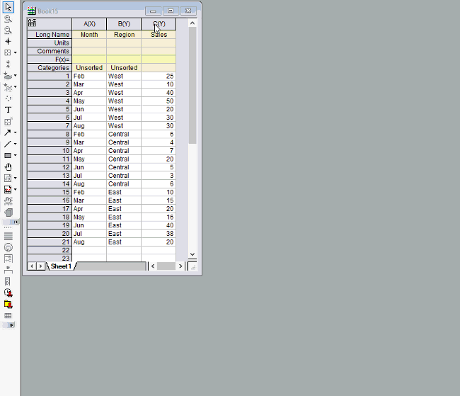

connect-data-within-group
Letztes Update: 27.02.2019
Mit der Option Sich überschneidende Feldern des Trellis-Diagramms ist es einfach, in Origin Datenpunkte innerhalb von Gruppen zu verbinden.

Schlüsselwörter:kategorial, zwischen Gruppen, Symbol und Linie